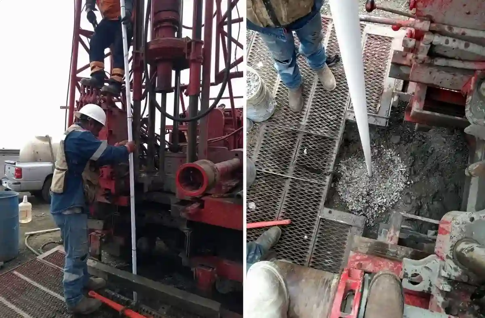

Als erfahrenes geotechnisches Ingenieurbüro bieten wir in Bottrop umfassende Baugrunduntersuchungen, Gründungsberatung und erdstatische Nachweise an. Unser Leistungsspektrum reicht von der Erkundung der Untergrundverhältnisse über die Bemessung von Flach- und Tiefgründungen bis hin zur Überwachung von Erdarbeiten und Spezialtiefbau. Dabei legen wir besonderen Wert auf die Einhaltung der deutschen Normen und eine enge Abstimmung mit den örtlichen Behörden und Bauunternehmen. Mit standortangepassten Analysen und modernster Messtechnik stellen wir sicher, dass Ihre Projekte in Bottrop sicher, wirtschaftlich und termingerecht realisiert werden.

Methodik und Umfang
Lokale Besonderheiten
Unsere langjährige Präsenz im Ruhrgebiet und die vertiefte Kenntnis der regionalen Geologie – insbesondere der Emscher-Mergel und der quartären Lockergesteine – ermöglichen uns eine fundierte Beurteilung der Baugrundverhältnisse in Bottrop. Wir arbeiten mit einem eigenen, regelmäßig kalibrierten Feld- und Laborgerätepark, der alle erforderlichen Versuche nach DIN-Norm abdeckt. Durch die enge Zusammenarbeit mit den örtlichen Bauämtern, Bergbau-Sachverständigen und Tiefbaufirmen stellen wir eine reibungslose Projektabwicklung sicher. Unsere normgerechten Berichte und standsicheren Nachweise bilden die verlässliche Grundlage für Ihre Bauvorhaben – von der Altlastenuntersuchung bis zur Bewertung setzungsempfindlicher Böden.
Benötigen Sie eine geotechnische Bewertung?
Antwort innerhalb von 24h.
E-Mail: kontakt@geotechnik.sbsErklärvideo
Geltende Normen
In Deutschland sind für die geotechnische Erkundung und Bemessung vorrangig die Eurocodes mit ihren nationalen Anhängen maßgebend. Die DIN EN 1997 (EC 7) regelt die geotechnische Bemessung und die DIN 1054 die Sicherheitsnachweise im Erd- und Grundbau. Für die Feld- und Laborversuche sind die DIN EN ISO 22475 (Probenahme), DIN EN ISO 14688 (Bodenklassifikation) und die DIN 18196 (Bodenklassifikation) sowie die einschlägigen DIN-Vorschriften für Rammsondierungen und Drucksondierungen anzuwenden. Die Planung von Gründungen erfolgt nach DIN 4017 (Grundbruchwiderstand) und DIN 4019 (Setzungsberechnungen). Bei der Untersuchung setzen wir auf normgerechte Verfahren wie die Sondierbohrung nach DIN EN ISO 22475-1.
Häufige Fragen
Welche Besonderheiten sind beim Bauen in Bottrop zu beachten?
Aufgrund der Lage im Ruhrgebiet müssen Sie mit bergbaubedingten Bodenbewegungen, Altbergbau und möglichen Grubenwasseranstiegen rechnen. Zudem steht Grundwasser oft oberflächennah an, sodass eine aufwändige Wasserhaltung erforderlich sein kann. Wir empfehlen eine frühzeitige Baugrunderkundung, um diese Risiken zu quantifizieren und geeignete Gründungs- und Abdichtungsmaßnahmen festzulegen.
Wie tief muss in Bottrop in der Regel gegründet werden?
Die Gründungstiefe hängt stark von der geplanten Last und den angetroffenen Bodenschichten ab. Während leichte Gebäude oft auf flach gegründeten Streifen- oder Einzelfundamenten in den Sanden und Kiesen der Terrassensedimente errichtet werden können, erfordern schwere Bauwerke oder solche mit hohen Anforderungen an die Setzungsarmut meist eine Tiefgründung auf Pfählen bis in die tragfähigen Emscher-Mergel.
Welche Normen gelten für geotechnische Nachweise in Deutschland?
Maßgebend ist das Eurocode-7-Regelwerk mit den nationalen Anhängen (DIN EN 1997-1 und DIN 1054). Für die Erkundung sind DIN EN ISO 22475 (Probenahme) und DIN 4020 (Geotechnische Erkundung) relevant. Die Bodenklassifikation erfolgt nach DIN 18196, die Berechnung von Setzungen nach DIN 4019 und der Grundbruchnachweis nach DIN 4017. Alle unsere Leistungen werden streng nach diesen Vorschriften erbracht.
Welche typischen Projekte führen Sie in Bottrop durch?
Wir begleiten sowohl Wohn- und Gewerbegebäude als auch Infrastrukturmaßnahmen wie Straßen, Brücken und Kanalbau. Typische Aufgaben sind die Baugrunduntersuchung, Gründungsberatung, Wasserhaltungsplanung, Böschungsstabilitätsnachweise sowie die Überwachung von Erdarbeiten und Spezialtiefbau. Durch unsere regionale Erfahrung können wir auf die spezifischen Anforderungen des Ruhrgebiets optimal eingehen.